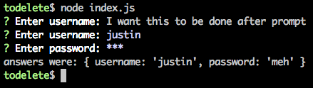
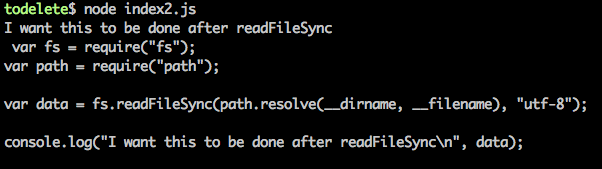
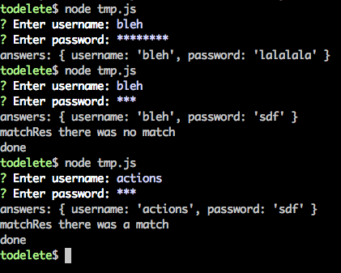

Sequential control flow with Lo-Dash or Underscore.js
Intro
This post is based on Simple async with only underscore by Adrian Rossouw. Yes, I did read the following disclaimer regarding this approach:
I don’t recommend this approach much anymore, because I have come to the conclusion that the async.js module is by far the best tool for the job
It’s hard to disagree with that. Async.js is specifically designed to cater for asynchronous control flow. However, I think there is value in using the approach suggested by Adrian when you’re already depending on Lo-Dash/Underscore.js and do not want to bring in a separate library to handle a one-off control flow need.
In this post I’ll be explaining the suggested solution in more detail. But before doing that, I will give some background so you might want to skip over to The approach if you’re already familiar with the need for asynchronous control flow in Node.js / event loop environments.
The need
Sync vs Async in a single threaded environment
So what’s this all about? Lets set up an example. In an empty directory do the following:
npm i inquirervim index.js
1 | var inquirer = require("inquirer"); |

Nevermind the duplicate “Enter username” prompt - notice that the final console.log statement executed before inquirer.prompt was done.
The code above assumes that expressing the two function invocations in sequence implies sequential execution. In other (multi-threaded) environments, where threads block on I/O, this is a reasonable assumption to make. In these environments, context switching allows one thread to block on I/O, switch over to another thread to keep processing, and switch back when data to process becomes available from the I/O source in question.
In a single threaded environment, however, you generally don’t want to block. For example, imagine uploading a couple of files from a web application. You wouldn’t want to “stop the world” while this data is still in transit. Instead, you would want to keep processing - for e.g. the user’s input when they decide to stop the upload.
So we can agree that blocking is not what we generally want to do in a single threaded environment. In the user prompt example above, you do not expect inquirer.prompt to “stop the world” while it fetches data from the user via process.stdin. The code inquirer.prompt uses to get data from the user does so in an asynchronous manner. It could do the same thing in a synchronous manner instead, but that is not good manners in a single threaded environment. If inquirer.prompt fetched its data synchronously and returned it, then the code above would work as expected but inquirer is not that selfish. It will wait on the stack for data to come in, allowing the processor to go do something useful in the meantime.
For instance, if we replaced user prompting with a function which reads from disk in a synchronous manner then we get something like this:
1 | var fs = require("fs"); |

To summarize, the key points are:
- In a single threaded environment asynchronous I/O becomes essential if you want concurrency.
- If you have statements which execute asynchronously, the order in which you write your statements does not imply the order in which these statements are executed.
OK, so we know asynchronous I/O is important here, but the order of execution is something we need control over as sometimes we don’t really care, but sometimes there’s no way around it. This means that we need to be able to express sequential execution when it matters - i.e. “do this after that”. If the order of statements won’t cut it, what will?
Callbacks
Well, if the order of statements won’t cut it, maybe callbacks, events, Promises, ES6 Generators, or 3rd party libraries such as Async.js will? As you can see, there’s no shortage of tools to use. Let’s pick callbacks and see where that leads us.
A callback is a function used to effect control flow. You generally pass a callback function to another function which is expected to perform some asynchronous operation and call the callback with the result of the asynchronous operation. This effectively adds another frame on the stack which needs to be cleared before the async-op-performing function itself is removed from the stack.
If you take another look at inquirer.prompt above, you will see an example of callback usage. The second argument inquirer.prompt takes is a callback function which itself takes an argument which contains the data inquirer.prompt fetched from the user.
Callbacks are nice, until they aren’t. You might have heard the term “callback hell”, but in any case, here’s a quick look down the abyss:

Pretty isn’t it?
The point here isn’t that you shouldn’t use callbacks - it’s that you should be careful not to overuse them. Mixu puts it nicely in his online Node book:
When you start coding with Node.js, it’s a bit like learning programming the first time. Since you want everything to be asynchronous, you use a lot of callbacks without really thinking about how you should structure your code. It’s a bit like being overexcited about the if statement, and using it and only it to write complex programs.
OK, so with the background taken care of, let’s move on to one approach we can take to mitigate callback hell by using Lo-Dash/Underscore.js, something you’re likely to already be depending on.
The approach
To start off with, consider the snippet used in Adrian’s post:
1 | // generate a callback |
The general idea is to store the functions you want to have execute sequentially in an array (actions) and use reduceRight and wrap to give you back a function which you can invoke to kick off the sequential execution of the functions in actions.
That’s the general idea. Let’s start breaking things down. (Note: I am quoting bits and pieces from the Lo-Dash docs below).
_.reduce
_.reduce(collection, [iteratee=_.identity], [accumulator], [thisArg])
This tells us that _.reduce can take 4 arguments, the collection to iterate over, the iteratee function, the accumulator which is the initial value the “reduction” starts with, and thisArg which is the this binding of iteratee.
The
iterateeis bound tothisArgand invoked with four arguments; (accumulator, value, index|key, collection).
So apart from knowing what _.reduce takes, you’ll also need to know what the iteratee function takes.
If
accumulatoris not provided the first element of collection is used as the initial value.This is referring to
_.reduce‘s 3rd argument. If you don’t supply an argument, then the first element ofcollectionwill be used as the 1st argument initeratee‘s first invocation.iteratee‘s 2nd argument isvalue, i.e. it’s the next value incollectionwhich hasn’t yet been throughiteratee.iteratee‘s 3rd argument is the index ofvaluein thecollection(“index” when thecollectionis an array, or “key” when thecollectionis an object).iteratee‘s 4th argument is thecollectionitself (i.e._.reduce‘s first argument).
Here’s a look at _.reduce in action:
1 | var _ = require("lodash"); |
Notice how the value returned from the iteratee function (i.e. sum) becomes the iteratee‘s accumulator the next time it is invoked on the next item in the collection.
Also notice how, in the case of no initial accumulator, it’s as if nums is one element short, and the element taken out of nums is used as the initial accumulator.
_.reduceRight is the exact operation but in reverse:
1 | var rightFrom10 = _.reduceRight(nums, sum, 10); |
So basically, we now know that _.reduce is a function which takes a collection and reduces the values in that collection to a single value based on the logic in its given iteratee.
_.wrap
Let’s now turn our attention to wrap.
_.wrap(value, wrapper)
Creates a function that provides
valueto thewrapperfunction as its first argument. Any additional arguments provided to the function are appended to those provided to the wrapper function. The wrapper is invoked with thethisbinding of the created function.
An example is probably better (based off of Underscore.js’s doc as I felt it was easier than the one given in Lo-Dash’s):
1 | var _ = require("lodash"); |
Essentially, wrap takes the first argument given to it and passes it to it’s second argument which is expected to be the wrapper function (in which you can do any logic around value). Any arguments you pass to the created wrapper functions (e.g. wrappedHello2) get passed as arguments to the wrapper function used in _.wrap.
Putting it all together
Revisiting Adrian’s example:
1 | function cb(text) { |
Consider the first reduction:
1 | // _.wrap is the iteratee |
The second reduction:
1 | // _.wrap is the iteratee |
etc… etc… until we finally get back a function that wraps all other functions in actions. Hopefully, you’re starting to see how this thing sticks together.
Final example
To drive the point home, let’s finish this with a less trivial, but completely useless, example:
1 | var _ = require("lodash"); |
You should now have a good idea of what’s going on. Note how next is always bound to the next function in actions which needs to execute after the function in question does. Any arguments after next (e.g. answers in the second function in actions) are passed in when next is invoked in a previous function’s body (i.e. next(answers) in actions‘s first function).
You can see that we are still using callbacks when using asynchronous functions like inquirer.prompt and fs.readFile, but we avoid nesting any deeper than the inital callback passed to these asynchronous functions.
Basically, this example asks for a username and password and proceeds to read it’s own source code if password is equal to "sdf". Also, assuming you get past the password check, an attempt to match the username against the contents of the file’s source code is carried out, and depending on the result, either "there was a match" or "there was no match" is passed to the next function in actions.
Since we’re never calling next if password does not equal "sdf", we’re effectively breaking the chain of wrapped functions.
